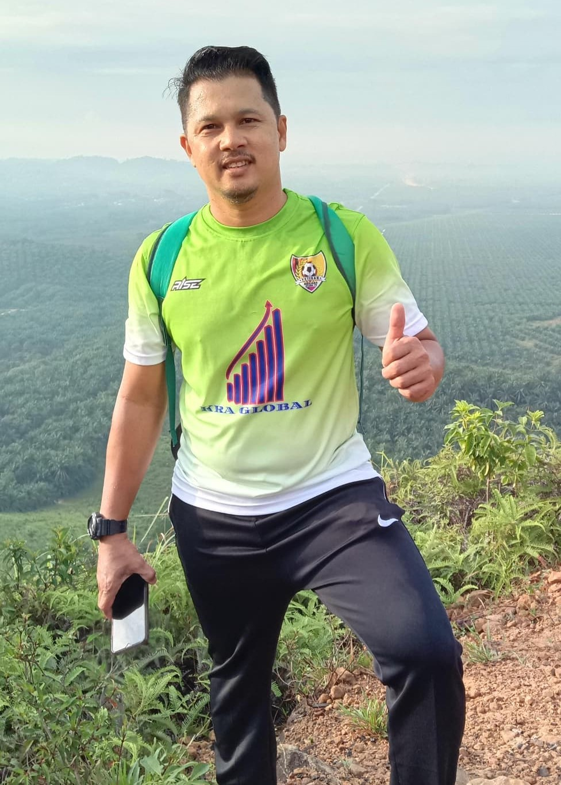
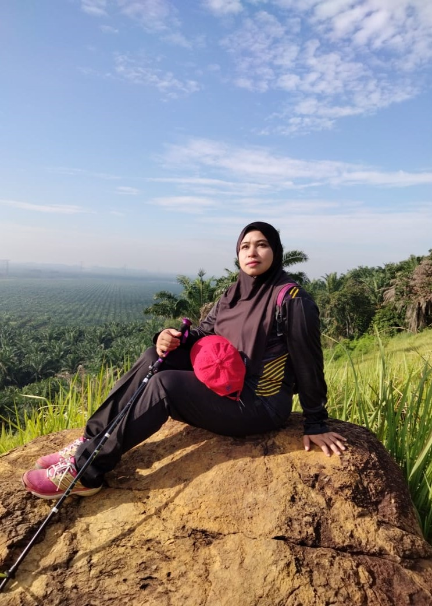
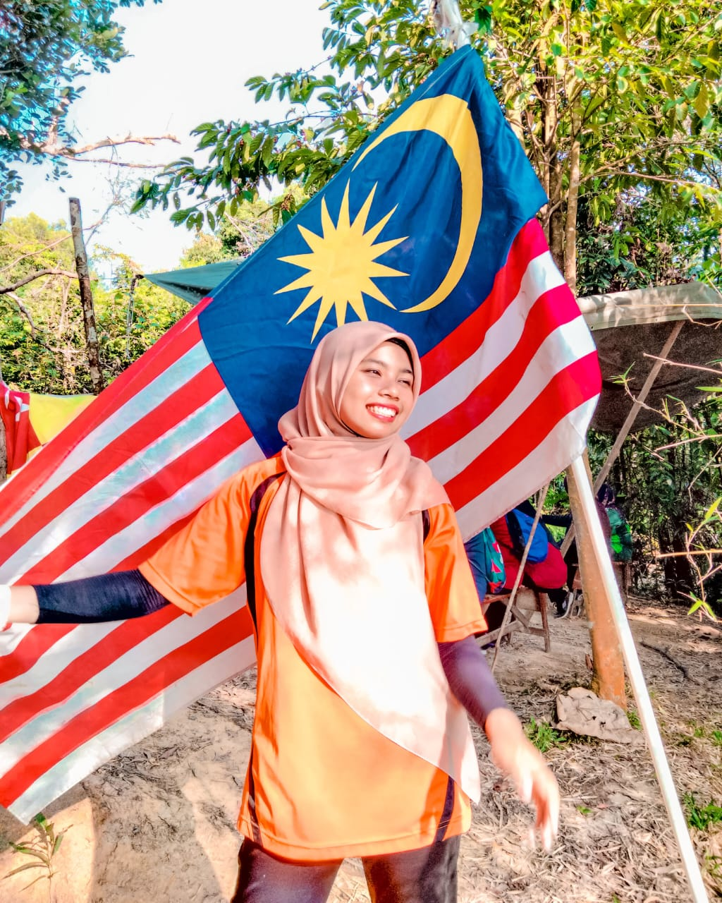
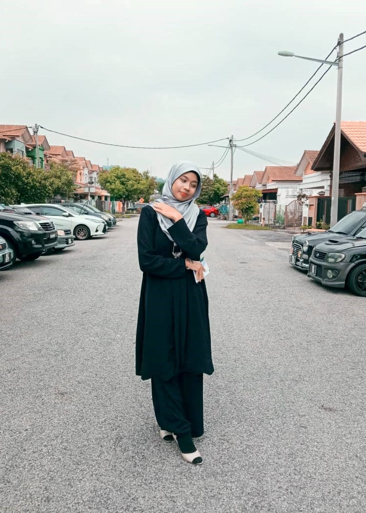
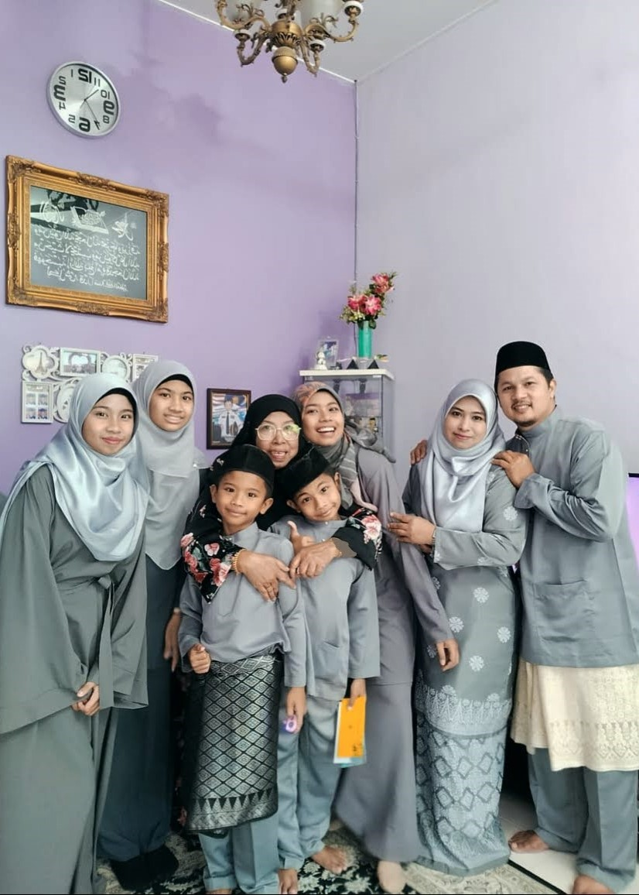
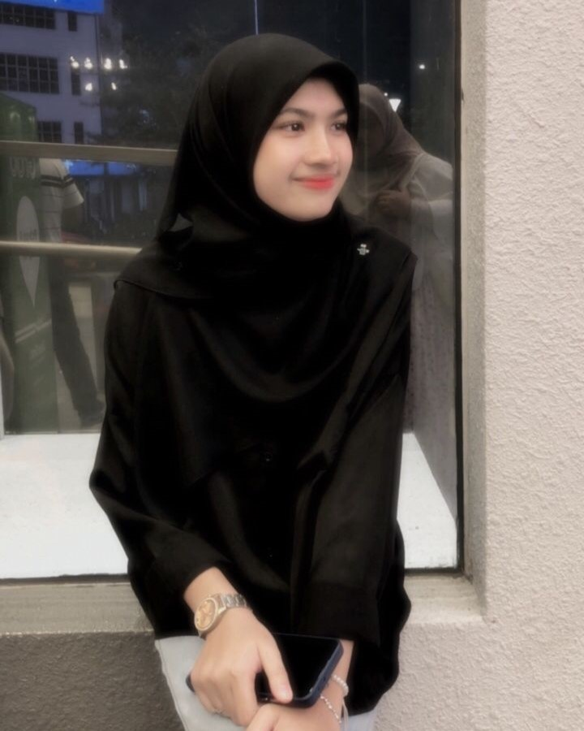
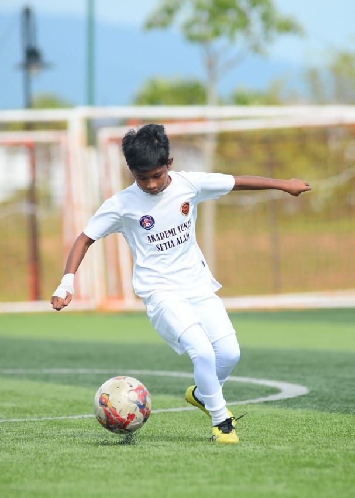
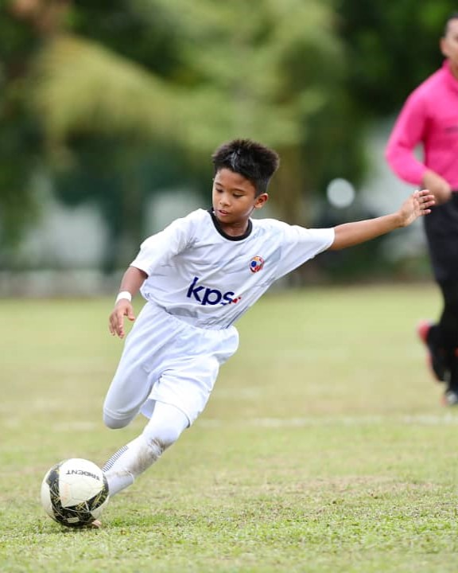

This is my lovely father. His name is Nazari Bin Abdul Hazis. He works under warehouse department at Abex Medical System Sdn Bhd, Shah Alam.

This is my beloved mother. Her name is Wan Nor Liza Binti Kamarudiin. She works in sales team at Scientex Berhad, Shah Alam.

This is my older sister. Her name is Nurfazira Binti Nazari. She just finish her degree as an Economy Business student at UiTM Puncak Alam.

This is me. My name is Nurfarisya Binti Nazari. I currently studying information management at UiTM Rembau, Negeri sembilan.

This is my happy family. Even though I am having a hard time, I know my family will always there for me. I will not trade them with anything.

This is my younger sister. Her name is Nur Fasya Binti Nazari. She currently continue her study as pre-diploma student at UiTM Pematang Pauh.

This is my first younger brother. His name is Muhammad Farriez Bin Nazari. He has a goal of attending a boarding school after finishing primary school. He also used to play hockey for his school and managed to get third place in the match.

This is my second younger brother. His name is Muhammad Fazrie Bin Nazari. He used to play football for Malaysia at Vietnam and Thailand at the age of 9 years old under the Akademi Tunas Petaling Perdana for ACF Football Tournament.